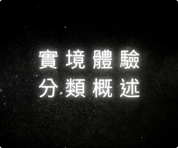

11 Sep 2024

22 Jun 2024

25 Jun 2024
密室逃脫是一種結合了解謎、合作和冒險的娛樂活動。在這裡，參加者將被鎖在一個主題房間中，必須在限時內解決各種謎題，才能成功逃脫。這篇文章將為你提供一些實用的建議，幫助你在密室逃脫中脫穎而出。
選擇合適的隊友是成功的第一步。理想的團隊應該具備不同的技能和特長，例如邏輯推理、觀察力和創造力。在遊戲開始前，與隊友討論策略，確定每個人的角色，這樣可以提高團隊的效率。
當你進入密室時，首先要做的就是觀察四周。注意每個角落的物品、牆上的裝飾和地板上的圖案。隱藏的線索可能隨處可見，因此保持細心和敏銳是關鍵。
密室逃脫的謎題通常包含邏輯推理、數字組合和文字遊戲。遇到難題時，不妨試著從不同的角度來思考，或者詢問隊友的意見。以下是一些常見的解謎技巧：
⭕邏輯推理：使用邏輯推理來解決問題，比如推導出可能的答案。
⭕數字和字母：常見的密碼鎖通常使用生日、年份等常見數字，記得嘗試這些組合。
⭕拼圖和圖形：有些謎題需要拼圖或解決圖形問題，注意各個部分之間的關係。
將找到的線索進行分類，分為已解決、待解決和未使用的物品。這樣可以避免重複檢查已經解決的謎題，讓思路更加清晰。
密室逃脫通常有時間限制，因此有效的時間管理至關重要。設定小目標，比如在特定的時間內解決某個謎題，能幫助你保持節奏。如果某個謎題太難，及時轉移注意力，先解決其他問題。
在遊戲中，與隊友保持良好的溝通是非常重要的。分享你找到的每個線索或想法，即使是看似不相關的情報，也可能幫助其他人找到解決方案。
面對挑戰時，保持冷靜是關鍵。不要讓壓力影響你的判斷力。若遇到困難，稍作休息，深呼吸，重新整理思路，然後再繼續挑戰。
最重要的是，記得享受這個過程！無論最終結果如何，密室逃脫都是一個激發創意、增進友誼的有趣體驗。
11 Sep 2024
22 Jun 2024
25 Jun 2024